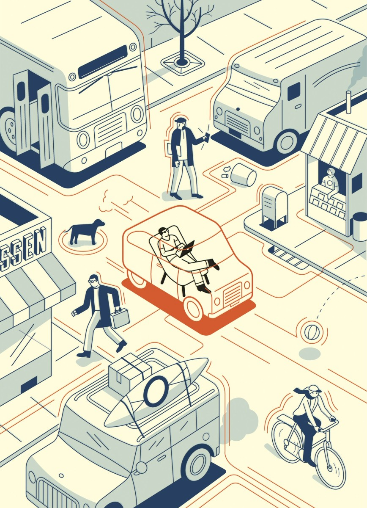
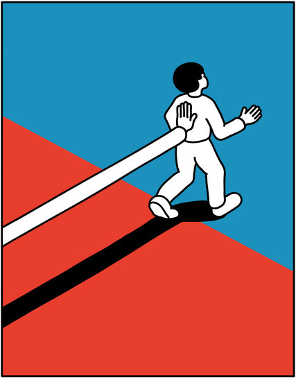
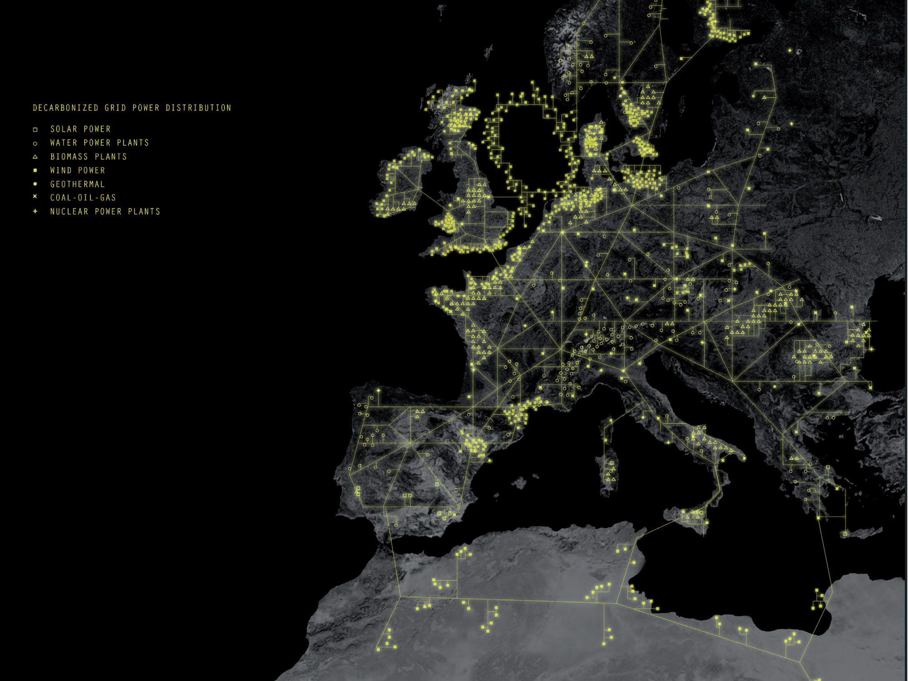
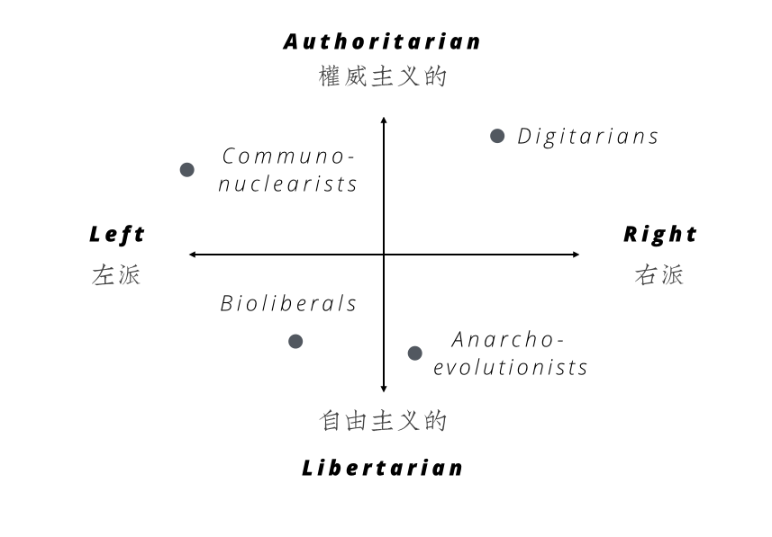
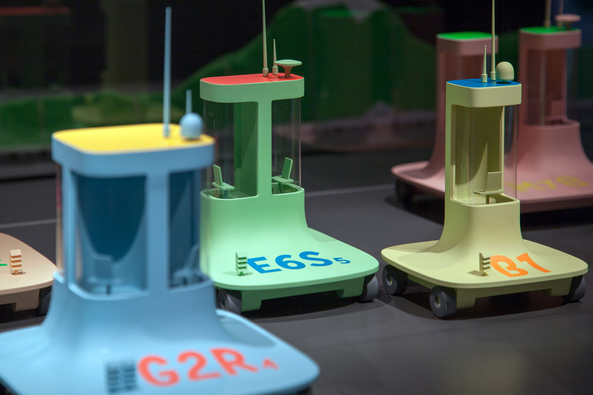
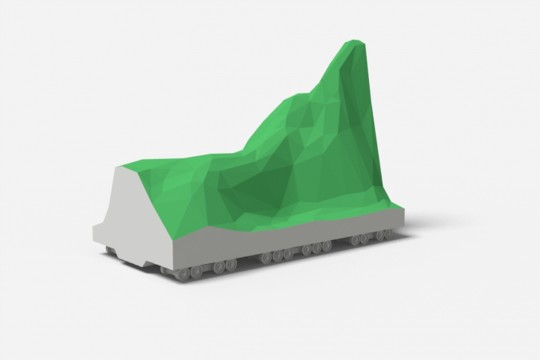
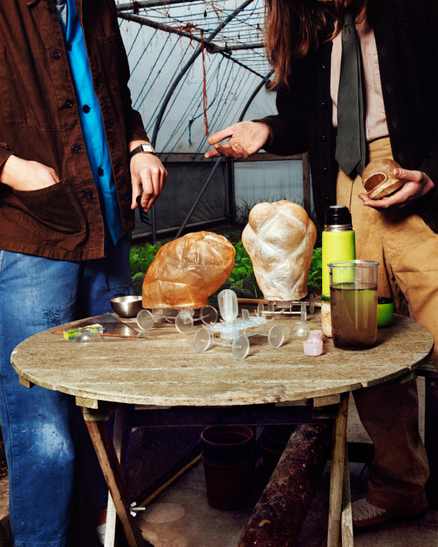
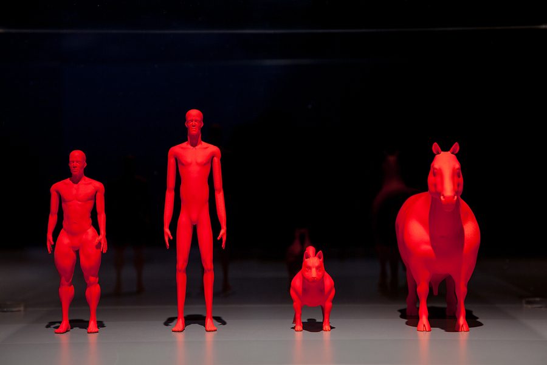

激进的18世纪法国唯物主义史观的乌托邦学者认为大众（the mass of the people）是其社会与物质条件结合的产物，而不具备能力超越；现实世界的牢笼区将社会区分割成两个部分：被现实世界软禁的、被动的大众（the passive mass）;以及书写历史、建立「统治性的世界观（ruling ideas）」的少数精英。
这些「统治性的世界观」的目的在于增强现实，它构建起一整套共有价值（commonsense）在潜移默化中强化大众对物质世界的认识，例如「穷人穷是因为懒」、「移民偷走了我们的工作」、「入侵他国是为了解放当地人民」等等。
真正的社会割裂正式来自于此，而深处科技行业的我们，无意识地成为帮凶——技术帮助我们制造精英式的生活方式、传播被主流现实定义为「美的」东西、我们相信只要「那些人」努力他们会成为我们、同时相信只要我们努力我们也会成为「那些人」、我们一方面担忧这个被分层的社会、但担忧的终究只是「我们为什么不在那上层」。
同时，科学通过其无所不能，解释这个现实世界，并肆无忌惮地炫耀着其改变世界的伟大能力，其目的并不在于「改变」而在于强化现有的物质世界，对大众而言，只是牢笼中，多了件沙发。
某种意义上说，艺术也是帮凶，从天顶画师们对无上权利的赞颂，到后世设计运动对现实世界的忧虑，不过于歌功颂德或无病呻吟，何尝不是一种政治宣传——不过是牢笼中粉饰的天空而已——安慰剂而已。
设计与社会变革
Dunne和Raby所期待的，便是在众多社会变革的方式中找到属于「设计」的一条路。这一条路与马克思所阐述的「社会变革必须来自于群众自我意识和其对客观世界改造的结合」类似，其关联性有三：
- 设计是从下至上的、并基于个体行为（individual action）的；
- 设计是主观世界（需求）和客观世界（方案）的结合；
- 设计是包含自我意识的：我将选择什么样的设计？如何选择？
因此，这便是D&R在《Speculative Everything》一书中的最核心的逻辑——是否可以将设计变为帮助大众获得真正自由意志主体（Free Agent）的手段？
有趣之处在于，传统意义上，设计是共有价值（commonsense）「玩弄」大众的产物：我来告诉你什么是好的和美的？以及更重要的——我来告诉什么是你需要的？但D&R却希望翻转设计，使其成为割开现实世界统治的一把匕首、自我改造的一副耕犁。
因此，理解Speculative Design的意涵，需要理解其期待改造社会的一面，如书中所言：
Can design achieve this, too, if it is decoupled from narrow commercial agenda? We think so. （设计是否能够帮助我们突破商业现实？我们相信可以）
这里的商业现实（commercial agenda）早在大众媒体兴盛之时就已经将真实世界与个人世界的边界模糊，而精妙之处在于，技术和传播的合谋，将无数个本该独立存在的现实被一股脑地丢进同一个现实里，在这里，现实变成了单数形式（reality singular）。
突破共有价值或商业现实的约束，抹去决定现实真实性的威权，建立现实的多重性（reality plural）应是设计师的新职责：帮助大众打开想象力，而非代表大众建立一个唯一的现实和未来。其目的，是在于帮助多数人重新思考自己与现实世界的关系，实现真正的自由意志。在这里，设计师是辅助者（facilitator），而非主宰者，更非官方意志的帮凶。
在科技现实中，这里官方意志的代言人，变成了「科技寡头」，它们构建了一个未来通过数据互联的世界，迫使70亿人基于一个统一的现实世界，去相信一个人类共有的「美好」未来。

这个未来的建筑，失去社会性的纬度（social dimension），取而代之的是科学、技术、以及逻辑。Bob Dylan在《Subterranean Homesick Blues》中唱到：「You don't need a weatherman to know which way the wind blows」，这里的Weatherman，可以指代一切被这个由科技精英构建的这个未来中，一切可以预见的元素。
在科技的穹顶之下，连政治家都在向马克·扎克伯格顶礼膜拜，冗杂着新自由主义的梦（neoliberal dream），最高生产力的代表者跟他们的前任者一样，维护着科技的未来之路，大众早已遗忘自己是否需要一个天气预报员告诉自己风往哪边刮。
Nudge
Dunne和Raby所期待Speculative Design能做的，就是用一种鼓励（nudge）的方式，辅助大众开始对某个话题的讨论。

一个名为Eneropa（能源欧罗巴）的项目，作为项目的一部分，设计事务所AMO的创始人Rem Koolhaas先生设计一份全新的欧洲地图，期待用一种设计的方式，将欧洲各国结合其主要能源的选择进行重新命名，就这样出现了「生物质堡（Biomassburg）」这样的地名——倾向于使用生物能源的巴尔干地区。

这份地图来源于欧洲目前主要能源供给规划的分布，其目的是让民众和政策制定者开始重新思考和协商欧洲各国的能源策略：

这样的设计本身是具有引导性，而不尝试解决任何问题的。为美国军方服务的智库兰德公司2007年发布了《国家建设初学者手册》，旨在帮助美国政府在世界各地政府发生倾覆时迅速建立起国家机构，受到这一项目的启发Dunne和Raby思考：我们该如何建立一个国家？如何思考能源、政治、经济、和意识形态（ideology）对一个国家建立的影响。整个项目的核心要素是：
- 主要技术和国家意识形态整合；
- 在政治区间上有确定的位置；
- 用交通工具（vehicle）表现。
首先，在标准的政治区间上标注出四种技术和意识形态的组合，分别是：

- Digitarians：以撒切尔和里根时代为代表的新自由主义（Neoliberalism）和数字技术的组合；
- Communonuclearists：共产主义和核技术的组合；
- Bioliberals：社会民主主义和生物技术的组合；
- Anarchoevolutionists：无政府主义和自我进化技术的组合。
通过这样的简化和抽象（典型的设计方法），设计师开始设计每个微型国家中的交通工具。
数字车
Digitarians所在的数字国家，政府通过数字建立威权也提供福祉，指标、全面的监控、跟踪、数字记录、百分百的透明，不再区分谁是人民（citizens）谁是消费者（consumers），连民众的想象都可以由数字完成，一切都在数字的管理之下，根本不存在所谓的乌托邦，所有行为都变成越来越短暂的输入输出。
在这个背景下，主要的交通工具是「数字车（Digicar）」，一种完全自动驾驶的行驶工具，和现在无人驾驶提出的「更好的出行体验」不同，高速公路的拥有者将数字车提供给消费者，他们就像现在的运营商一样，通过数字监控和优化，引导数字车寻找最优化的路线，实现最大化利润。出行就像购买流量包或话费套餐（tariff）一样，整个国家变成一个由无差别的单点数字包组成的流量系统，每一个单点上的人都显得可爱、质朴、如他们想象的那样自由，就像每一个数字车的设计一样。


数字车就是在发生的现实，Google和Tesla们正在把人类塞入一个个数字包，而每个人似乎都感受到了无处不在的自由和幸福，一个自由幸福的Digitarian。
列车之国
Communonuclearists生活在巨大列车（Train）上的国度，核能技术极为发达，为了保证生产和供给的平衡，这是一个人口不再增长的国度，有人上车就要有人下车，在持续运行的列车里，国家把人民和危险的环境（可能的核污染）隔离，不同车厢提供各种设施，所有消费和快乐都是配给的，居住者享受着所有国家福利，同时必须严格服从规则。


这个隐喻妙不可言，永远行进的列车代表着中心权力通过速度对时间和地点的控制（我们要去向一个永远到不了的地方），也掌握了所有土地，即车厢，让所有人都变成无产者，同时又是共享富裕的，前提是无限能量的核能，以及不再增长的最终社会形态或终极故事。
生物车
化石能源贯穿了整个西方世界的价值观，燃烧和分化石油以获得速度和效率的隐喻在资本主义世界中无处不在，而在社会民主主义制度下生活的Bioliberals们希望基于生物技术建立一个完全不同的世界，更快不一定更好，他们追求的是和自然融为一体，在这里，主要的交通工具是「生物车（Biocar）」——一款完全使用生物能源驱动的、又大又重又臭的四轮车。

居民们根据自己的需要自己生产这种交通工具，采用厌氧菌排出气体作为动力，虽然慢、也不符合空气动力学原理，但这是最自然的方式。这个设计最有趣的地方在于讨论生物技术的极度发展对于国家政体和意识形态的影响——如果人人都掌握了制造能源的方式会怎样？
自我进化生物
镜头转向Anarcho-evolutionists的国度，在这里，人们把进化的权利掌握在自己手里，他们抛弃了几乎所有的技术，至少不在开发他们，而是通过自我训练、生物改进、自我进化去适应更加苛刻的生活环境以摆脱威权的管理，他们不相信政府而更相信自己，他们与Digitarians完全相反，人应该回到世界的主体。
他们的世界是没有车的世界，自己就是自己的交通工具、或是风、或是经过生物改良的动物，社会性和合作胜于速度与竞争，无政府主义事实上存于一个高度自治、且人人可为（can do not do better）的社会。
在这个社会里产生了「气球人（Ballonist）」和「单车人（Cyclists）」两种不同进化方向的人，前者更高更瘦、后者拥有更高级的大腿肌肉群；同时「马牛（Hox）」和「斗牛奇（Pitsky）」两种新物种被驯养出来，前者是马和牛的产物用于重物运输、后者是斗牛梗和哈士奇的组合，用于轻物运输和保护。

这一组设计的精妙之处在于讨论如下问题：
- 如果近乎无限的能源掌握在少数人手中，人类社会会变成什么？
- 如果所有的数据都掌握在少数人手中，人类社会会变成什么？
- 如果人人拥有制造能源的能力，人类社会会变成什么？
- 如果人人都可以通过自我改造进行进化，人类社会会变成什么？
真正的力量
威权因为掌握能源和数据而成为威权、人民掌握能源和自我进化而更加自由，通过设计，我们所讨论的不是是非对错的问题，而是从一个假设出发，制造一个环境让人们思考新的一种可能性，而非顺延着现实社会所定义的路线图，膜拜现实——我们以为自己不再是社会主义列车里的一份子，却欢心鼓舞地期待一个由自动车和虚拟显示技术构造的数字世界，本质上并没有区别。
这是《Speculative Design》的最后一章，让我们来回顾和总结Speculative Design的精要：科学用于解释世界、目的依然是增强现在的世界；艺术用于表达世界，却不在于改造；对世界真正的改造来自于人们自身的改造，是从下自上的；设计天生具有独立个体行为的特质，它能够通过交互的方式引导人们对于自身的改造；设计师是大众的，而不应该是精英的，应该为大众设计，用设计的方式启发和引导大众思考，保护大众的内心世界，而不被包裹在美好、自由、生活方式里的力量摧毁。
这本书，我用了两年的时间进行阅读，它真正讨论的话题已经超越了我们所理解的设计本身，而是把设计放在了科学和艺术之间、政治和意识形态之间、客观解释和自我表达之间、政治权利和个人意志之间，去探讨设计的意涵。
这才理解，人依然是社会和政治的动物，如何看待设计也决定了你要用什么样的方式生活、以及你和这个社会的关系。这才是Speculative Design真正的力量。
两年来，阅读愉快，谢谢。